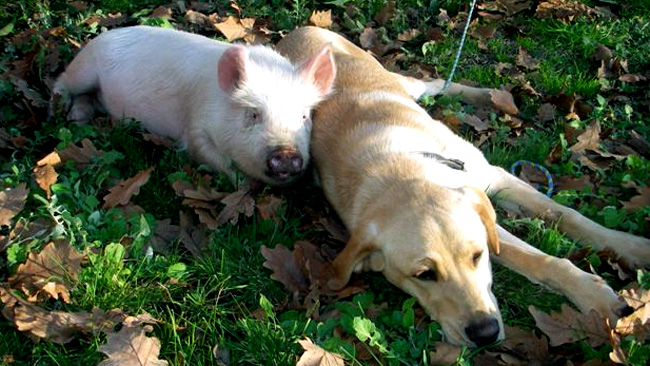
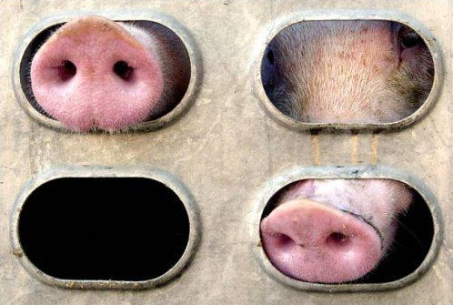
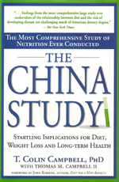
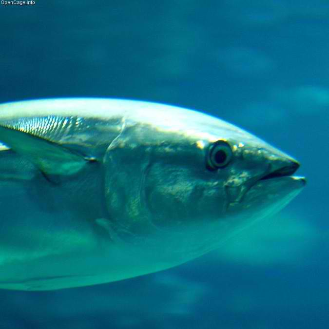

Why?
Definition of Veganism
The word "vegan" was coined in 1944 by Donald Watson of the Vegan Society of the UK. This definition states: "Veganism is a way of living that seeks to exclude, as far as possible and practicable, all forms of exploitation of, and cruelty to, animals for food, clothing and any other purpose. "
As you can see, veganism is not defined as a diet, but a way of living. While vegans follow an animal-free diet, they also do not wear animals or use them for entertainment or any other purpose.
Our Relationship with Animals
Animals are a constant part of our lives. They share our homes, our beds, and we even consider them members of our family. While they may not be able to balance a checkbook or speak our language, we value them highly. We interact with them and we often turn to them for emotional support.
-
Dogs, Cats, and Cows, What's the difference?
Watch this video of a rescued cow from the For the Animals Sanctuary playing with his new ball.
When they pass away, we mourn them. We no doubt also believe that they enjoy being alive as much as they enjoy the company of others. Yet, for other animals, we stick forks and knives into their bodies and wear their skin as clothing.
Moral Schizophrenia
If it is wrong to act violently to a dog or cat just for enjoyment or convenience, how can we justify the horrible things we do to other animals? We certainly do not need to eat animal products to be healthy; we do so only because it is a habit and we enjoy the taste of these products. Some of us try to address this inconsistency by purchasing products that are marketed as “humane” or as produced "ethically." However, as you’ll see, these words are meaningless and actually do very little to give animals a better life.
In any case, these terms encourage the public to believe it is okay to exploit animals simply because we enjoy it. This strange contradiction is our “moral schizophrenia.” We can overcome this social affliction and respect life by going vegan.
Can't we just consume "humane" animal products?
For example, there are no special transport vehicles for "humanely-raised" animals. The process of transport is the same as conventional animals and is a miserable, often fatal experience. Animals are forced onto trucks with weapons, prods, and even forklifts. Inside, it doesn’t matter if the animals are terrified or in pain, as long as they get to the slaughterhouse alive.
As with any other form of industrialized animal use, consumers have the choice either to participate in it or to refuse the products of exploitation and opt out of the demand-supply cycle altogether...
...Humans have no need for animal products, and the increasing number of vegans on the planet is a testament to how easy it is to live a healthy, fulfilling life without participating in the systematic abuse and unnecessary killing that goes on in the animal industry every day.
Animals suffer from cold, hunger, thirst, untreated infections, and illnesses during transport. This is not, however, a matter of irresponsible slaughterhouse workers. As long as these animals are objects of property, they cannot have rights.
To some, "humane" legislation appears to get us closer to having better lives for animals. Animal welfare legislation calls for larger confinements and methods of slaughter which supposedly cause less pain. However, these reforms are industry practices which do away with economically wasteful and outdated practices.
Animal welfare fosters more economically beneficial standards for producers and makes the public feel better about exploiting animals through marketing. It’s not about "them," the producers, it’s about us. We are the consumers, we are the ones paying for this practice to happen. The first, most important thing we can do to address this violence is to go vegan.
[The use of humane slaughter methods]...results in safer and better working conditions…brings about the improvement of products and economies in slaughtering operations; and produces other benefits for producers, processors, and consumers which tend to expedite an orderly flow of livestock and livestock products...
Should I go vegetarian?
Vegetarianism = enslavement, torture, exploitation and slaughter of animals. Veganism may seem way out from what you’re used to, and that’s understandable. However, you’ll find it to be easier than you think no matter what your circumstances. People from small towns, with food intolerances, and just plain pickiness have gone vegan overnight!
But if for some reason you’re thinking you may want to go vegetarian first, remember: vegetarianism means you’ll still be eating animal products and not necessarily less. You'll still be supporting the use of animals. All animal use involves unspeakable violence.
To learn more about becoming vegan, visit our Becoming Vegan page.
Don't I Need Animal Products to Be Healthy?
[Properly planned vegan diets] are healthful, nutritionally adequate, and may provide health benefits in the prevention and treatment of certain diseases….are appropriate for individuals during all stages of the life cycle, including pregnancy, lactation, infancy, childhood, and adolescence, and for athletes.
Not only are animal products unnecessary for optimal health, an increasing number of nutritionists and health professionals are acknowledging animal products are harmful to our health. Meanwhile, a healthy vegan diet helps reduce the risk of heart disease, cancer, obesity, and diabetes. Check out our nutrition section for more information on plant based diets.
The China Study: by T. Colin Campbell is arguably the most comprehensive study on nutrition ever done. Campbell provides compelling evidence linking animal products to disease, including cancer, heart disease, osteoporosis, diabetes, etc.
Sentience is all that matters: Regardless of how "intelligent" an animal may be, if they are sentient, they ought to have the basic right not to be a commodity.
Is Veganism Good for the Planet?
"About 2,000 pounds of grains must be supplied to livestock in order to produce enough meat and other livestock products to support a person for a year, whereas 400 pounds of grain eaten directly will support a person for a year. Thus, a given quantity of grain eaten directly will feed 5 times as many people as it will if it is eaten indirectly by humans in the form of livestock products.…"
Consuming a plant-based diet also has significant benefits for our environment. For example, the amount of potatoes we can produce from an acre of land is about 40,000 lbs compared to only 250 lbs of cow flesh supported from the same acre. When we feed plants to animals in order to eat the animal, we waste an enormous amount of food. For only one pound of cow flesh, 16 lbs of plant food and 5,000 gallons of water are required.
Compare that to 25 gallons of water for a pound of wheat. Animal agriculture is also responsible for most of the food-borne illness epidemics from water runoff. Our use of animals contributes significantly to greenhouse gas emissions as well as the destruction of forests for grazing. More than 250 million acres of forests are cleared every year in the US alone for this purpose.
Is Veganism Sustainable?
Considering the amount of waste produced by animal agriculture, it's staggering to think how much plant-based food could potentially be grown using the same resources used for animals.
Essentially, we have to feed animals plant foods constantly as they mature. After three to four years of harvesting and cycling this plant food through an animal, the animal is killed and eaten just once.
Imagine instead, each of those four years was used to grow plant food to be directly consumed by humans
Go vegan. It’s better for your health (animal foods cause physical harm); it’s better for the environment (animal agriculture is an ecological disaster); and, most importantly, it’s the morally right thing to do.
Check out some of our favorite sites and parts of this kit if you still have questions.
Whenever you find yourself on the side of the majority, it's time to pause and reflect